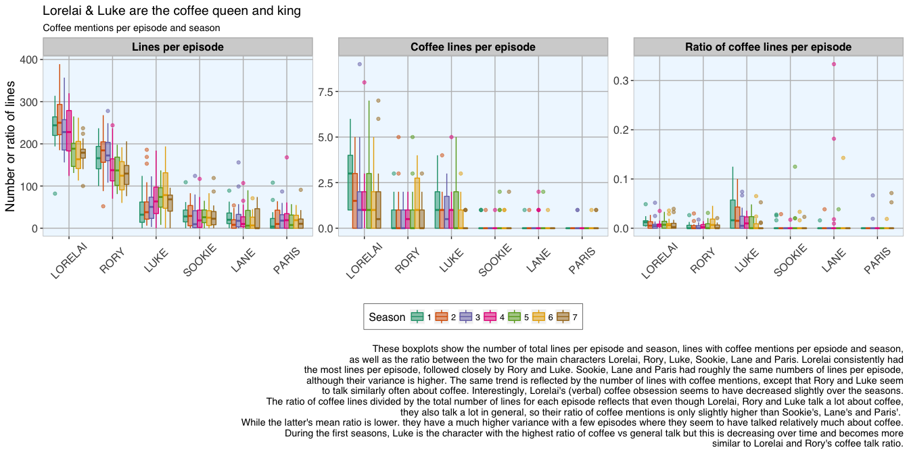
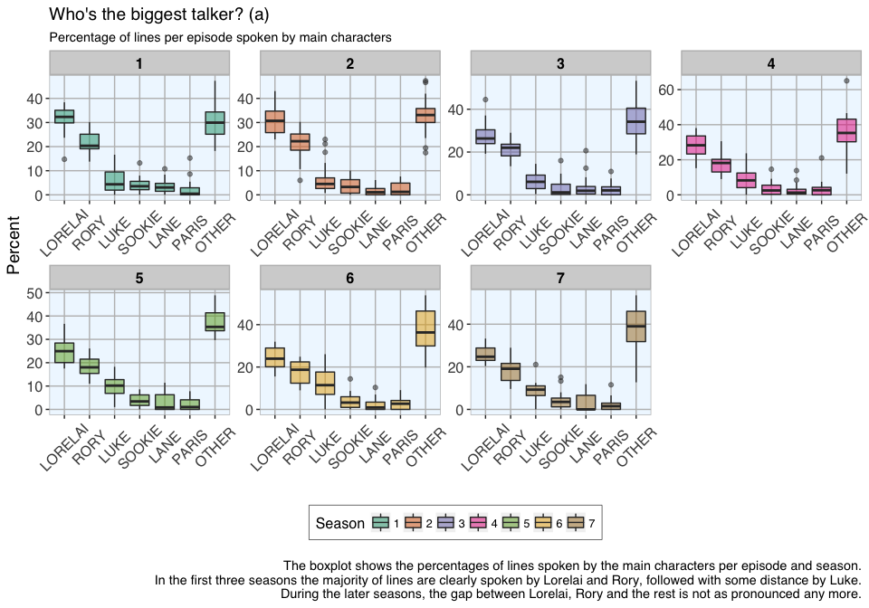
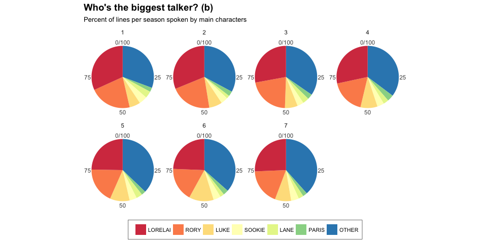

Analysing the Gilmore Girls' coffee addiction with R
Last week’s post showed how to create a Gilmore Girls character network.
In this week’s short post, I want to explore the Gilmore Girls’ famous coffee addiction by analysing the same episode transcripts that were also used last week.
I am also showcasing how to use the recently updated ggplot2 2.2.0.
The transcripts were prepared as described in last week’s post. Full R code can be found below.
How often do they talk about coffee?
The first question I want to explore is how often Lorelai, Rory, Luke, Sookie, Lane and Paris talked about coffee. For this, I subsetted the lines of these characters to where they talk about coffee (i.e. lines that include the word “coffee” at least once). I then created a plot showing how often they talk about coffee per episode and season.

The differences in coffee mention between characters are of course somewhat biased by differences in the total number of lines of each character in the respective episodes, as well by the length of the episodes.
This led me to wonder what proportion of each episode was occupied by which character.


R code
# set names
names <- c("LORELAI", "RORY", "LUKE", "SOOKIE", "LANE", "PARIS")
# extract lines for each character in names
for (name in names){
assign(paste("lines", name, sep = "_"), transcripts_2[grep(paste0(name), transcripts_2$character), ])
}
# extract lines not from characters in names
lines_OTHER <- transcripts_2[!grepl("LORELAI|RORY|LUKE|SOOKIE|LANE|PARIS", transcripts_2$character), ]
# update names to include "other"
names <- c(names, "OTHER")
# which lines mention coffee.
for (name in names){
df <- get(paste("lines", name, sep = "_"))
assign(paste("coffee", name, sep = "_"), df[grep("coffee", df$dialogue), ])
}
# calculate number of lines in total and with coffee mentions per episode
library(dplyr)
for (name in names){
lines_p_ep <- get(paste("lines", name, sep = "_"))
lines_p_ep <- as.data.frame(table(lines_p_ep$episode))
df <- get(paste("coffee", name, sep = "_"))
df_2 <- as.data.frame(table(df$episode))
# calculate coffee lines per episode
coffee_lines_p_ep <- full_join(lines_p_ep, df_2, by = "Var1")
coffee_lines_p_ep$ratio_p_ep <- coffee_lines_p_ep$Freq.y/coffee_lines_p_ep$Freq.x
coffee_lines_p_ep$Season <- gsub("_.*", "", coffee_lines_p_ep$Var1)
coffee_lines_p_ep$character <- paste(name)
assign(paste("coffee_lines_p_ep", name, sep = "_"), coffee_lines_p_ep)
}
coffee_df <- rbind(coffee_lines_p_ep_LORELAI, coffee_lines_p_ep_RORY, coffee_lines_p_ep_LUKE, coffee_lines_p_ep_SOOKIE,
coffee_lines_p_ep_LANE, coffee_lines_p_ep_PARIS)
library(ggplot2)
my_theme <- function(base_size = 12, base_family = "sans"){
theme_grey(base_size = base_size, base_family = base_family) +
theme(
axis.text = element_text(size = 12),
axis.text.x = element_text(angle = 45, vjust = 0.5, hjust = 0.5),
axis.title = element_text(size = 14),
panel.grid.major = element_line(color = "grey"),
panel.grid.minor = element_blank(),
panel.background = element_rect(fill = "aliceblue"),
strip.background = element_rect(fill = "lightgrey", color = "grey", size = 1),
strip.text = element_text(face = "bold", size = 12, color = "black"),
legend.position = "bottom",
legend.justification = "top",
legend.box = "horizontal",
legend.box.background = element_rect(colour = "grey50"),
legend.background = element_blank(),
panel.border = element_rect(color = "grey", fill = NA, size = 0.5)
)
}
library(tidyr)
coffee_df_gather <- coffee_df %>%
gather(group, value, Freq.x:ratio_p_ep)
coffee_df_gather[which(coffee_df_gather$group == "Freq.x"), "group"] <- "Lines per episode"
coffee_df_gather[which(coffee_df_gather$group == "Freq.y"), "group"] <- "Coffee lines per episode"
coffee_df_gather[which(coffee_df_gather$group == "ratio_p_ep"), "group"] <- "Ratio of coffee lines per episode"
coffee_df_gather$character <- factor(coffee_df_gather$character, levels = names)
coffee_df_gather$group <- factor(coffee_df_gather$group, levels = c("Lines per episode", "Coffee lines per episode", "Ratio of coffee lines per episode"))
ggplot(data = coffee_df_gather, aes(x = character, y = value, color = Season, fill = Season)) +
geom_boxplot(alpha = 0.5) +
labs(
x = "",
y = "Number or ratio of lines",
title = "Lorelai & Luke are the coffee queen and king",
subtitle = "Coffee mentions per episode and season",
caption = "\nThese boxplots show the number of total lines per episode and season, lines with coffee mentions per epsiode and season,
as well as the ratio between the two for the main characters Lorelai, Rory, Luke, Sookie, Lane and Paris. Lorelai consistently had
the most lines per episode, followed closely by Rory and Luke. Sookie, Lane and Paris had roughly the same numbers of lines per episode,
although their variance is higher. The same trend is reflected by the number of lines with coffee mentions, except that Rory and Luke seem
to talk similarly often about coffee. Interestingly, Lorelai's (verbal) coffee obsession seems to have decreased slightly over the seasons.
The ratio of coffee lines divided by the total number of lines for each episode reflects that even though Lorelai, Rory and Luke talk a lot about coffee,
they also talk a lot in general, so their ratio of coffee mentions is only slightly higher than Sookie's, Lane's and Paris'.
While the latter's mean ratio is lower. they have a much higher variance with a few episodes where they seem to have talked relatively much about coffee.
During the first seasons, Luke is the character with the highest ratio of coffee vs general talk but this is decreasing over time and becomes more
similar to Lorelai and Rory's coffee talk ratio."
) +
my_theme() +
facet_wrap(~ group, ncol = 3, scales = "free") +
guides(fill = guide_legend(nrow = 1, byrow = TRUE)) +
scale_fill_brewer(palette="Dark2") +
scale_color_brewer(palette="Dark2")
# calculate number of lines in total
for (name in names){
lines_p_ep <- get(paste("lines", name, sep = "_"))
lines_p_ep <- as.data.frame(table(lines_p_ep$episode))
lines_p_ep$character <- paste(name)
assign(paste("lines_p_ep", name, sep = "_"), lines_p_ep)
}
# combine and convert to wide format to make calculating proportions easier
lines_df_wide <- spread(rbind(lines_p_ep_LORELAI, lines_p_ep_RORY, lines_p_ep_LUKE, lines_p_ep_SOOKIE,
lines_p_ep_LANE, lines_p_ep_PARIS, lines_p_ep_OTHER), Var1, Freq)
rownames(lines_df_wide) <- lines_df_wide[, 1]
lines_df_wide <- as.data.frame(t(lines_df_wide[, -1]))
# calculate proportions and percentage
prop_lines_df_wide <- sweep(lines_df_wide, 1, rowSums(lines_df_wide), FUN = "/")
percent_lines_df_wide <- prop_lines_df_wide * 100
percent_lines_df_wide$Episode <- rownames(percent_lines_df_wide)
percent_lines_df_wide$Season <- gsub("_.*", "", percent_lines_df_wide$Episode)
# gather for plotting
percent_lines_df_gather <- percent_lines_df_wide %>%
gather(Character, Percent, LANE:SOOKIE)
percent_lines_df_gather$Character <- factor(percent_lines_df_gather$Character, levels = names)
percent_lines_df_gather <- merge(percent_lines_df_gather, subset(lines_LORELAI, select = c(episode, episode_running_nr)), by.x = "Episode", by.y = "episode")
percent_lines_df_gather$Episode <- factor(percent_lines_df_gather$Episode, levels = percent_lines_df_gather[order(percent_lines_df_gather$episode_running_nr, decreasing = TRUE), "Episode"])
percent_lines_df_gather <- percent_lines_df_gather[!duplicated(percent_lines_df_gather), ]
ggplot(data = percent_lines_df_gather, aes(x = Character, y = Percent, fill = Season)) +
geom_boxplot(alpha = 0.5) +
labs(
x = "",
y = "Percent",
title = "Who's the biggest talker? (a)",
subtitle = "Percentage of lines per episode spoken by main characters",
caption = "\nThe boxplot shows the percentages of lines spoken by the main characters per episode and season.
In the first three seasons the majority of lines are clearly spoken by Lorelai and Rory, followed with some distance by Luke.
During the later seasons, the gap between Lorelai, Rory and the rest is not as pronounced any more."
) +
my_theme() +
facet_wrap(~ Season, ncol = 4, scales = "free") +
guides(fill = guide_legend(nrow = 1, byrow = TRUE)) +
scale_fill_brewer(palette = "Dark2") +
scale_color_brewer(palette = "Dark2")
# calculate number of lines in total
for (name in names){
lines_p_season <- get(paste("lines", name, sep = "_"))
lines_p_season <- as.data.frame(table(lines_p_season$season))
lines_p_season$character <- paste(name)
assign(paste("lines_p_season", name, sep = "_"), lines_p_season)
}
# combine and convert to wide format to make calculating proportions easier
lines_df_wide <- spread(rbind(lines_p_season_LORELAI, lines_p_season_RORY, lines_p_season_LUKE, lines_p_season_SOOKIE,
lines_p_season_LANE, lines_p_season_PARIS, lines_p_season_OTHER), Var1, Freq)
rownames(lines_df_wide) <- lines_df_wide[, 1]
lines_df_wide <- as.data.frame(t(lines_df_wide[, -1]))
# calculate proportions and percentage
prop_lines_df_wide <- sweep(lines_df_wide, 1, rowSums(lines_df_wide), FUN = "/")
percent_lines_df_wide <- prop_lines_df_wide * 100
percent_lines_df_wide$Season <- rownames(percent_lines_df_wide)
# gather for plotting
percent_lines_df_gather <- percent_lines_df_wide %>%
gather(Character, Percent, LANE:SOOKIE)
percent_lines_df_gather$Character <- factor(percent_lines_df_gather$Character, levels = names)
# plot
bp <- ggplot(percent_lines_df_gather, aes(x = "", y = Percent, fill = Character)) +
geom_bar(width = 1, stat = "identity") + theme_minimal() +
scale_fill_brewer(palette = "Spectral")
pie <- bp + coord_polar("y", start = 0) +
theme(
axis.title.x = element_blank(),
axis.title.y = element_blank(),
panel.border = element_blank(),
panel.grid = element_blank(),
axis.ticks = element_blank(),
plot.title = element_text(size = 14, face = "bold"),
legend.title = element_blank(),
legend.position = "bottom",
legend.text = element_text(size = 8),
legend.justification = "top",
legend.box = "horizontal",
legend.box.background = element_rect(colour = "grey50"),
legend.background = element_blank(),
) + guides(fill = guide_legend(nrow = 1, byrow = TRUE))
pie + facet_wrap( ~ Season, ncol = 4) +
labs(
title = "Who's the biggest talker? (b)",
subtitle = "Percent of lines per season spoken by main characters")
sessionInfo()
## R version 3.3.2 (2016-10-31)
## Platform: x86_64-apple-darwin13.4.0 (64-bit)
## Running under: macOS Sierra 10.12
##
## locale:
## [1] de_DE.UTF-8/de_DE.UTF-8/de_DE.UTF-8/C/de_DE.UTF-8/de_DE.UTF-8
##
## attached base packages:
## [1] stats graphics grDevices utils datasets methods base
##
## other attached packages:
## [1] ggplot2_2.2.0 dplyr_0.5.0 splitstackshape_1.4.2
## [4] data.table_1.9.6 tidyr_0.6.0
##
## loaded via a namespace (and not attached):
## [1] Rcpp_0.12.8 knitr_1.15 magrittr_1.5
## [4] munsell_0.4.3 colorspace_1.3-1 R6_2.2.0
## [7] stringr_1.1.0 plyr_1.8.4 tools_3.3.2
## [10] grid_3.3.2 gtable_0.2.0 DBI_0.5-1
## [13] htmltools_0.3.5 lazyeval_0.2.0 yaml_2.1.14
## [16] assertthat_0.1 digest_0.6.10 tibble_1.2
## [19] RColorBrewer_1.1-2 evaluate_0.10 rmarkdown_1.1
## [22] labeling_0.3 stringi_1.1.2 scales_0.4.1
## [25] chron_2.3-47